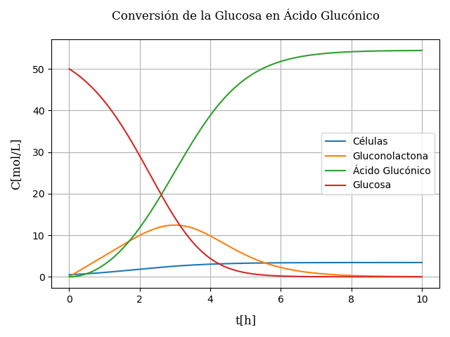

Un poco acerca de NumPy
NumPy (Numerical Python), es unalibrería que da soporte para crear vectores y matrices en formato de numpy-arrays, lo cuál es un ventaja pues simplifica las operaciones entre ellas. (Es una librería que tiene mucho parecido con MatLab).
Para instalar numpy puedes hacerlo con conda, también puedes visitar si página web para ver otras opciones de instalación Numpy
conda install numpyMétodo de runge kutta 4° orden
El método de Runge Kutta 4°Orden, es una variación del método de Euler, el cuál permite resolver ecuaciones diferenciales ordinarias con condiciones iniciales. Vease Runge Kutta 4
La forma general de la variación del método de Euler es :
representa el paso de integración, y es la estimación de la pendiente o la derivada evaluada en .
Para RK4 la ecuación completa sería:
Donde:
La función es igual a evaluada en .
Cambienos un poco la notación para dar a entender que usamos vectores.
La codificación en python usando NumPy será muy similar a la notación vectorial que usamos arriba, la ventaja más importante trabajando con Numpy es el uso de sus vectores o matrices con el tipo de dato de numpy-arrays, estos nos permiten realizar operaciones entre ellas más fácilmente y al mismo tiempo tratarlas como si fueran listas de python.
Por ejemplo si tenemos un vector con componentes y con y queremos obtener un vector con componentes esto se lo hace fácilmente con los numpy-array, simplemente haciendo las operación como si fueran valores numéricos:
Con numpy array dando valores numéricos a los componenetes de los vectores y .
import numpy as np
A = np.array([1, 2, 3])
B = np.array([2, 4, 6])
C = A / 2 + 4 * B
print(C)
# Resultado [ 8.5 17. 25.5]Usted pude hacer las comprobaciones correspondientes con el código mostrado, si cada elemento de un vector numpy se le puede asignar los valores así de fácil, la codificación del método se simplifica bastante.
Normalmente en los sistemas de ecuaciones diferenciales no aparece la variable independente (tiempo ) por lo que las derivadas son independientes de la misma. En la codificiación se notará eso, se omitira la variable independiente .
Codificando RK4
# archivo rk4.py
"""
Valores de entrada:
sist_edo (function): Contiene el sistema de ecuaciones diferenciales
retorna las derivadas evaluadas.
rango_t (list): Tiene la forma [t_ini, t_end] rango en cual
se va a resolver el sistema
h(float): (valor opcional) Paso de integración,
por defecto 0.01
Valores de Salida
Z(np.array): Matriz que contiene la solución del sistema,
cada columna representa una variable y cada
fila la variación de las variables de acuerdo
a la variable independiente t
"""
import numpy as np
def rungek4(sist_edo, rango_t, Z0, h=0.01):
t0, tf = rango_t
t = np.arange(t0, tf + h, h)
nt = len(t)
nz = len(Z0)
Z = np.zeros((nt, nz))
Z[0] = Z0
for i in range(1, nt):
M1 = sist_edo(Z[i - 1])
M2 = sist_edo(Z[i - 1] + h * M1 / 2)
M3 = sist_edo(Z[i - 1] + h * M2 / 2)
M4 = sist_edo(Z[i - 1] + h * M3)
Z[i] = Z[i - 1] + h * (M1 + 2 * M2 + 2 * M3 + M4) / 6
return Z
Ahora que ya tenemos programado nuestro método podemos probarlo resolviendo un ejemplo
Resolución de un sistema de ecuaciones diferenciales
Conversión de Glucosa a Ácido glucónico
La conversión de glucosa a Ácido Glucónico es una simple oxidación del grupo aldehido del azucar a uno del grupo carboxilo. Esta transformación puede ser llevada a cabo por un microorganismo en un proceso de fermentación. La enzima Glucosa Oxidasa presente en el microorganismo, convierte la Glucosa a Gluconolactona. A su vez la gluconolactona se hidroliza a la forma de ácido glucónico. Todo el proceso de fermentación puede ser descrito como sigue:
Crecimiento celular
Oxidación de la glucosa por acción de la Glucosa Oxidasa
Hidrólisis de la Gluconolactona
Descomposición del Peroxido de Hidrógeno
Un modelos matemático de la fermentación de la bacteria Pseudomonas Ovali, el cuál produce ácido glucónico, ha sido desarrolaldo pro Rai y Constatinides, este modelo, el cual describe la dinámica en la fase logaritmica, puede ser descrito como sigue:
Velocidad de crecimiento celular
Velocidad de formación de gluconolactona
Velocidad de formación de ácido glucónico
Velocidad de consumo de glucosa
Donde:
: Concentración de células.
: Concentración de Gluconolactona.
: Concentración de Ácido glucónico.
: Concentración de Glucosa.
: Parámetros que son función de la temperatura y el pH.
Las condicionas de operaciónson 30°C y el pH 6.6, para los cuales los parámetros son:
; ; ; ; .
Con los datos proporcionados halle las concentraciones en el rango de 0h a 10h. Si las condiciones iniciales son:
; : ;
# archivo solver_EDO.py
import rk4
import numpy as np
import matplotlib.pyplot as plt
"""
Función que define el sistema de ecuaciones diferenciales de la
conversión del a glucosa a Ácido Glucónico
Entrada:
Y(lista, np-array): Vector que contiene las variables que van a servir
para evaluar la derivada.
Salida:
dy(lista, np-array): Vector que contiene las derivadas.
"""
def glucosa2ac_gluconico(Y):
dy = np.zeros(len(Y))
b1 = 0.949
b2 = 3.439
b3 = 18.72
b4 = 37.51
b5 = 1.169
dy[0] = b1*Y[0]*(1-Y[0]/b2)
dy[1] = b3*Y[0]*Y[3]/(b4+Y[3])-0.908*b5*Y[1]
dy[2] = b5*Y[1]
dy[3] = -1.011*b3*Y[0]*Y[3]/(b4+Y[3])
return dy
# Resolvemos el sistema de ecuaciones diferenciales con rk4
# Aunque las unidades de las constantes no nos la dan, podemos azumir que son
# compatibles con las unidades de tiempo en horas
rango_t = [0, 10]
h = 0.01
t = np.arange(rango_t[0], rango_t[1] + h, h)
# Definimos las condiciones iniciales
Y0 = np.array([0.5, 0, 0, 50])
Y = rk4.rungek4(glucosa2ac_gluconico, rango_t, Y0, h)
# Graficando la solución
font = {'family': 'serif',
'color': 'xkcd:black',
'weight': 'normal',
'size': 12,
}
plt.plot(t, Y[:, 0], label="Células")
plt.plot(t, Y[:, 1], label="Gluconolactona")
plt.plot(t, Y[:, 2], label="Ácido Glucónico")
plt.plot(t, Y[:, 3], label="Glucosa")
plt.legend(loc=5)
plt.title("Conversión de la Glucosa en Ácido Glucónico", fontdict=font, pad=20)
plt.xlabel("t[h]", labelpad=10, fontdict=font)
plt.ylabel("C[mol/L]", labelpad=10, fontdict=font)
plt.grid()
plt.show()
La gráfica solución es:
